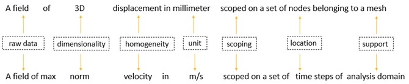
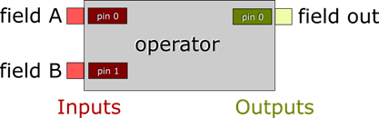
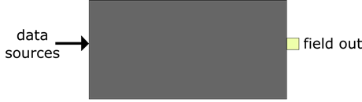
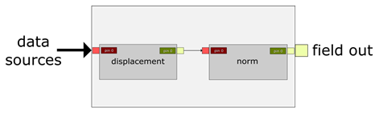

Terms and concepts#
DPF uses fields of data, not physical results. This makes DPF a very versatile tool that can be used across teams, projects, and simulations.
Key terms#
Here are descriptions for key DPF terms:
Data source: One or more files containing analysis results.
Field: Main simulation data container.
Fields container: For a transient, harmonic, modal, or multi-step static analysis, a set of fields, with one field for each time step or frequency.
Location: Type of topology associated with the data container. DPF uses three different spatial locations for finite element data:
Nodal,Elemental, andElementalNodal.Operators: Objects that are used to create, transform, and stream the data. An operator is composed of a core and pins. The core handles the calculation, and the pins provide input data to and output data from the operator.
Scoping: Spatial and/or temporal subset of a model’s support.
Support: Physical entity that the field is associated with. For example, the support can be a mesh, geometrical entity, or time or frequency values.
Workflow: Global entity that is used to evaluate the data produced by chained operators.
Meshed region: Entity describing a mesh. Node and element scopings, element types, connectivity (list of node indices composing each element), and node coordinates are the fundamental entities composing the meshed region.
Scoping#
In most cases, you do not want to work with an entire set of data but rather with a subset. To achieve this, you define a scoping, which is a subset of the model’s support. Typically, scoping can represent node IDs, element IDs, time steps, frequencies, and joints. Scoping describes a spatial and/or temporal subset that the field is scoped on.
Field data#
In DPF, field data is always associated with its scoping and support, making the field a self-describing piece of data. For example, in a field of nodal displacement, the displacement is the simulation data, and the associated nodes are the scoping. A field can also be defined by its dimensionality, unit of data, and location.
Location#
The location is the type of topology associated with the data container. For
finite element data, the location is one of three spatial locations: Nodal,
Elemental, or ElementalNodal.
A
Nodallocation describes data computed on the nodes. A node is identified by an ID, which is typically a node number.An
Elementallocation describes data computed on the element itself. An element is identified by an ID, which is typically an element number.An
ElementalNodallocation describes data defined on the nodes of the elements. To retrieve an elemental node, you must use the ID for the element. To achieve this, you define an elemental scoping or nodal scoping.
Concept summary#
This image summarizes the preceding concepts:

Operators#
You use Operators to create, transform, and stream the data. An operator is composed of a core and input and output pins.
The core handles the calculation.
The input and output pins, like those in an integrated circuit in electronics, submit data to the operator and output the computed result from the operator.

Workflows#
You can chain operators together to create a workflow, which is a global entity that you use to evaluate data produced by operators. A workflow requires inputs to operators, which computes requested outputs.
Think of a workflow as a black box in which some operators are chained, computing the information for which the workflow is made:

The following image shows operators that have been chained together to create a total deformation workflow. You can use this workflow in any simulation workflow with any data sources as inputs.
